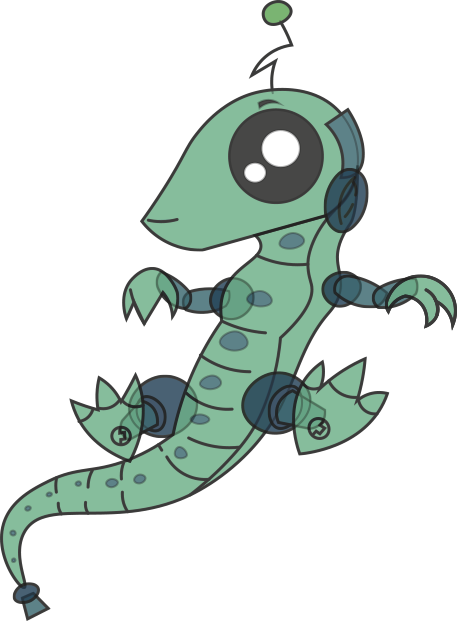
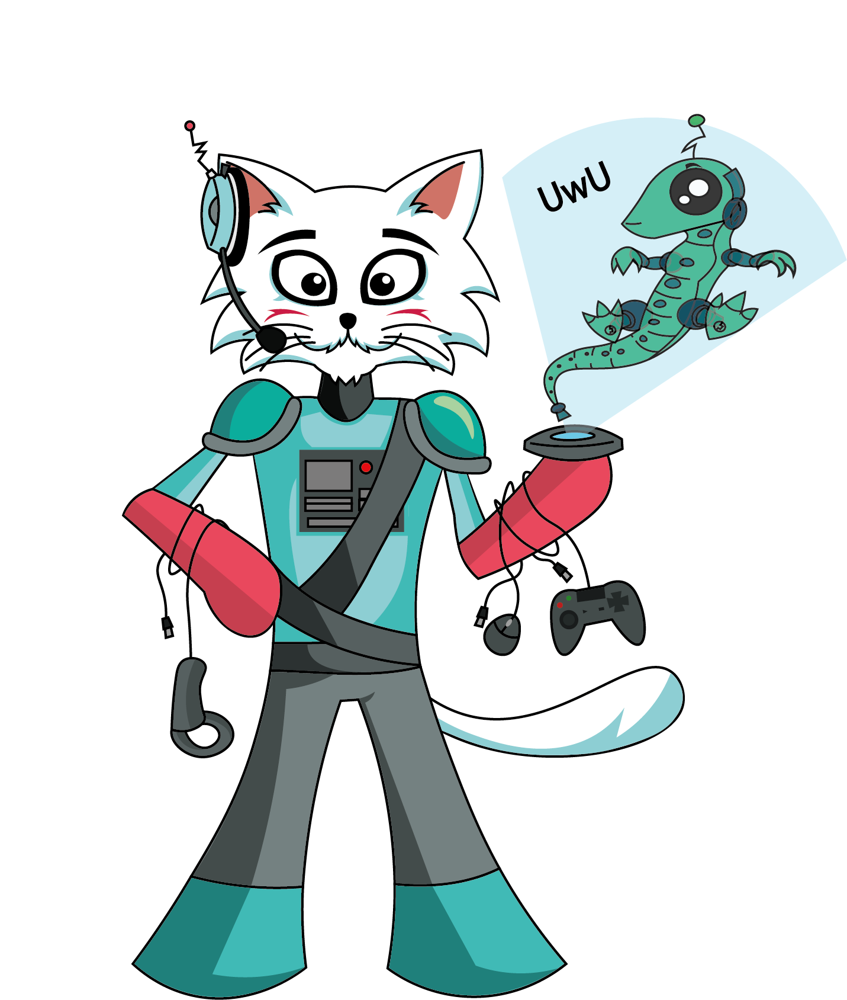

Hola, soy Vars
La mejor amiga de Fiw y una base de datos que almacena todos los proyectos multimedia del universo, y se los provee a Fiw para que los analice en su podcast.

Y yo soy Fiw
Creador y presentador en el podcast “La Frecuencia Vistrark”, en este nos dedicamos a comentar y difundir proyectos independientes de distintas categorías.
Soy un adicto a los videojuegos independientes, estos son mi pasión. ¿que donde entran las otras categorías?, tranquilos, de estas se encargan mis otros amigos, pero espera… ¿dónde están ellos?, visita nuestro podcast y conócelos.